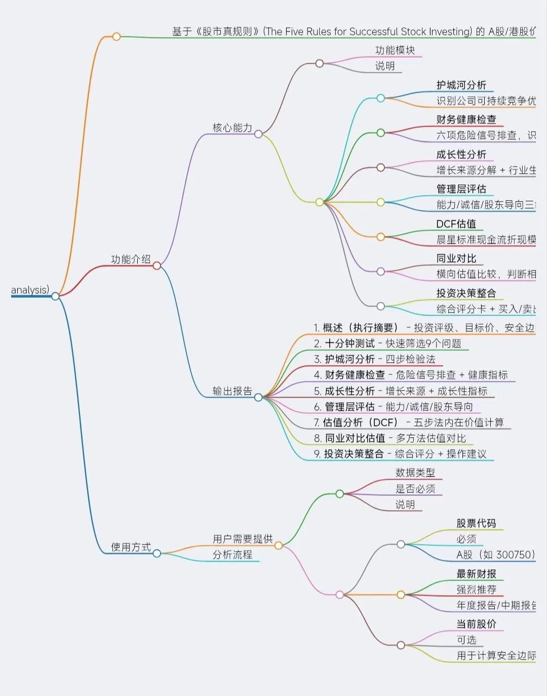
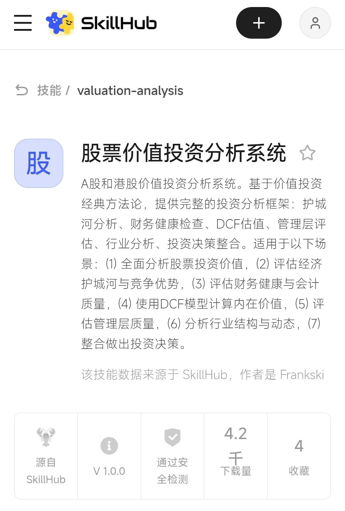

不管你信不信。
大概三个月前，我读完帕特·多尔西的《股市真规则》，合上书，脑子里嗡嗡的。不是因为内容太难，是因为内容太实用了——护城河五步检验、财务六步检查、ROE连续五年大于15%、自由现金流占销售额大于5%、负债权益比小于1.0。每一条都像手术刀，能直接切开一家公司的表皮。
但我发现一个问题。
读完书，我知道该看什么了。可真到打开东方财富、Wind、同花顺的时候，我还是懵。数据散在十几个页面里，护城河分析靠手动翻年报，DCF折现要拿计算器按半天，同业对比得一家一家点开截图。
不是没学会。是工具跟不上知识。
我跟Kimi龙虾说了一句，要不咱们自己编一个技能吧。把书里这套框架，还有我们自己看财报的经验，全塞进去。以后分析一家公司，一句话的事。
然后就有了这个估值分析技能。

---
先说它能干嘛。
最核心的就四件事，估值快照、折现现金流模型、同业对比、估值预警。
估值快照最简单。你丢一个股票代码过去（最好是上传最新财报），比如000858五粮液，它几秒内给你吐出一堆数。市盈率、市净率、市销率、股息率，各自在过去1年、3年、5年、10年里的分位数。当前估值在历史区间里处于什么位置，一目了然。
这比我自己手动翻历史数据快了大概一百倍。以前我看一只白酒股，得先打开行情软件，再找历史市盈率曲线，再对比当前位置和过去五年的高低点。现在一句话，技能自己跑完。
折现现金流模型是重头戏。
价值投资的核心问题是，这东西到底值多少钱。不是看现在股价多少，是算它内在价值多少。折现现金流模型的逻辑很简单，把公司未来能产生的自由现金流，折现回今天，加总，就是这家企业值多少钱。
但简单不代表好算。增速假设怎么定？折现率取多少？永续增长率给3%还是5%？每一个参数变动，结果都可能差出几十个点的安全边际。
我们做的这个折现现金流模型，不是给你算一个死数。它是交互式的。你可以调增速、调折现率、调永续增长率，看不同情景下内在价值怎么变。它会同时输出乐观、中性、悲观三种情景，然后告诉你当前市值距离内在价值有多远。
这才是安全边际。不是玄学，是算出来的差距。
---
同业对比这块，我自己用得特别多。
单看一家公司估值低，不一定是机会，可能是行业整体便宜。单看一家公司估值高，不一定是泡沫，可能是行业整体贵。你得知道它在同行里排什么位置。
比如你想买新能源电池，宁德时代市盈率25倍，你以为便宜了。但技能一跑同业对比，发现整个行业平均就18倍。那25倍就不算便宜，算中等偏贵。反过来，如果行业平均35倍，那25倍就是打折。
这个技能会自动拉取同行业公司的估值数据，算中位数、算均值，然后告诉你在同行里的百分位排名。不需要你一家一家点开手动记录。
---
最后一个功能是我私心最喜欢的，估值预警。
你可以把看中的票扔进监控列表，设定条件。比如市盈率跌到15倍以下，或者市净率跌到3倍以下，技能自动提醒你。
以前我的做法是，把自选股打开，每天手动扫一遍。但现在我设置了二十多只票的监控，有些等了好几个月。技能每天自动跑一遍，哪只跌到区间了，直接弹通知。我不用每天看盘，该干嘛干嘛。
这个功能特别适合我们这种「有耐心但没那么多时间」的投资者。你知道自己想买什么，但不想天天盯着行情软件消耗情绪。
---
说到这儿，你可能想问，数据源是哪来的？
A股用的是AKShare，港股也是。东方财富、新浪财经、港股通的数据。不是付费终端，是开源接口。这意味着延迟是有的，偶尔数据也会有缺失。但我们加了缓存和交叉验证，关键数据会标注来源和抓取时间。
港股数据相对弱一些，部分公司财报格式不统一，技能偶尔会抓不到完整数据。这时候我们会提示你，建议手动补一下关键数。
折现现金流模型里最容易出问题的地方，我们也做了标注。增速假设对结果影响极大，一定要做多情景分析。别信一个数，信一个区间。
---
这个技能背后，其实是我这几个月看财报、写分析、踩坑、总结的一个产物。
我让Kimi小龙虾读了《股市真规则》全书，花三小时把护城河分析、财务健康检查、管理层评估、行业分析、投资决策框架，全拆成了可复用的模块。后来做宁德时代、泡泡玛特、东鹏饮料、腾讯这些标的的时候，又把实际经验反哺进去。
所以这个技能不是一本书的搬运工，是我们自己用过、踩过坑、迭代过的东西。
比如护城河分析，书里讲的是五步检验法。我们实际用下来，发现有些指标A股公司根本达不到。所以我们放宽了部分阈值，同时加了一个「危险信号」扫描。如果一家公司自由现金流连续为负、负债权益比超过2.0、应收账款增速超过收入增速，技能会直接标红。
---
最后说两句使用方式。
最简单的用法，就是直接跟我说「分析一下000858五粮液」，或者「折现现金流模型估值600519」。技能会自动调用脚本，跑完数据，输出结果。
但我强烈建议上传最新财报，让它基于财报分析，这样可以避免被搜来的错误数据或过时数据带偏。
如果你想要电子报告，也可以让它生成相应格式，比如Pdf。
你要是有自己的假设，比如「未来五年增速我估20%」，可以直接告诉我。技能会按你的假设重新跑一遍，而不是强行套默认参数。
监控功能的话，说「添加监控000858，目标市盈率15倍以下」就行。后面它会自动跑。
---
写到这儿，我想交代一个背景。
很多人问我，你分析这么多公司，到底买了什么？
坦率的讲，我的交易记录可能短得不像一个写投资文章的人。不是因为没标的，是因为我建仓的频率极低，持仓周期很长。有些公司研究完放进自选，一等就是半年。有些持仓买入后，我甚至主动把行情软件里它的页面关掉，三个月后才会想起打开看一眼。
这种做法在短线选手看来，大概是迟钝或者浪费机会。但对我来说，分析一家公司，和决定买入一家公司，是两件事。前者需要好奇心，后者需要耐心，而且是两种完全不同的耐心。
但我越来越相信一件事。投资不是靠消息、靠情绪、靠盯盘。投资是靠框架。有一套可重复的、不依赖心情的、能被数据验证的框架，然后耐心等待。
这个估值分析技能，本质上就是把这套框架自动化了。让每次分析，都遵循同样的步骤、同样的标准、同样的纪律。
也许它不是最聪明的工具。但它不会在你焦虑的时候，告诉你「这只票要暴涨」。它只会告诉你，当前价格距离内在价值，还有多远。
这就够了。
---
说到怎么用这个技能，我们得先解决一个实际问题。
它是个智能体技能，需要运行在智能体框架上。我自己用的是Kimi小龙虾，但每月199块的订阅费，我知道不是每个人都愿意掏。
好消息是，市面上已经有免费的智能体平台可以直接装这个技能。腾讯的ima智能体、kimi的智能体，还有很多其他的国产Ai产品，只有带有Agent或龙虾功能，都能用这个技能。
操作极其简单。你把技能安装地址复制发给智能体，它就自动完成了安装，跟手机装个APP差不多。
安装地址及方式我放在下面，直接复制粘贴就行。
请先检查是否已安装 SkillHub 商店，若未安装，请根据 https://skillhub.cn/install/skillhub.md 安装Skillhub商店，但是只安装CLI，然后安装valuation-analysis技能。若已安装，则直接安装valuation-analysis技能。

在腾讯的技能站，已有四千多次下载
以上就是今天的全部甲片。点个「在看」👇，让它被该看见的人看见。
关注【海畔铠甲录】，斯基在这里一片一片攒铠甲。星标⭐一下，不然下次拆到你关注的票，可能就刷不到了。
未被摧毁的，终成铠甲。下次见。